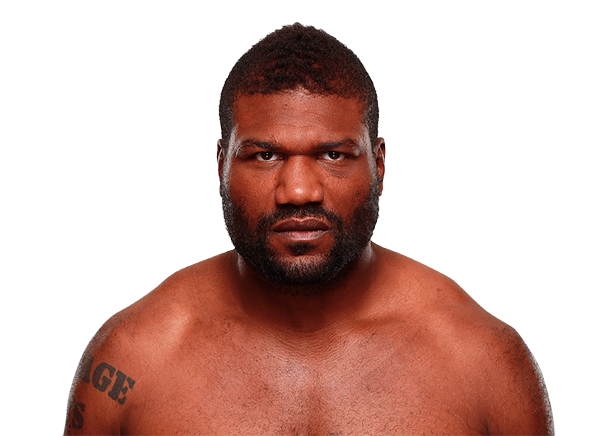

Quinton “Rampage” Jackson es un peleador estadounidense de MMA conocido por su fuerza brutal y estilo ofensivo. Nació el 20 de junio de 1978 en Memphis, Tennessee, y comenzó entrenando lucha libre antes de dedicarse profesionalmente a las artes marciales mixtas. Su carrera en UFC fue legendaria, siendo campeón de peso semipesado y uno de los peleadores más populares por su estilo agresivo y emocionante.
Jackson se destacó por su striking poderoso y su capacidad de nocaut. Su carisma y presencia mediática lo convirtieron en un favorito de los fanáticos, y su habilidad para combinar boxeo con wrestling y muay thai le permitió dominar varias etapas de su carrera profesional. Su estilo ofensivo siempre busca la finalización rápida, lo que lo hace impredecible y peligroso en cada pelea.

Otros que podrían interesarte: